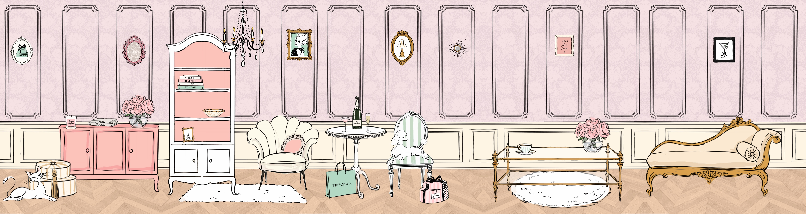
点击探索房间
Sunburn已经神游了，请你先自行探索吧。
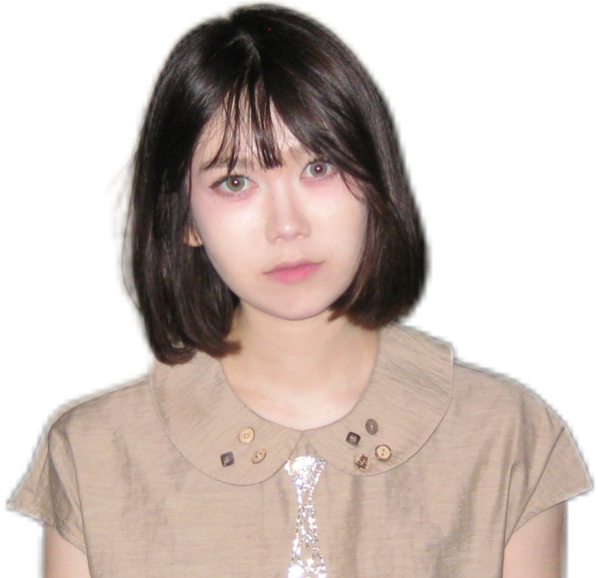
关于我
About Me
Hi！这里是 Sunburn，欢迎来到我的家！
我是一个喜欢观察、记录和创造的人。
对品牌、视觉、社交媒体和各种有趣的新事物都很好奇。
这里会放一些我的工作、项目，以及一些随手做的小东西。
希望你可以在这里，慢慢认识我。
FourCuts肆 格
把四个瞬间，装进一张相纸。
选模板 → 拍照 → 自定义 → 导出。无需下载，即开即拍。
设计 & 开发 by 娜扎开提 (Sunburn)
不止是拍照，
是一次关于「此刻」的小小仪式。
FourCuts 肆格是一款在浏览器里运行的「人生四格」拍照亭。
选一套模板，拍下四个瞬间，叠加边框与滤镜，最后导出一张属于你的相纸。
八种情绪，八张相纸。
从暖到冷、从复古到未来，每一套模板都有自己的底色、边框与遮罩系统。


连背景，都是现场长出来的。
不靠现成图片——文字平铺、波点、格纹，三种背景都由 Canvas 程序化实时绘制，颜色随你调。
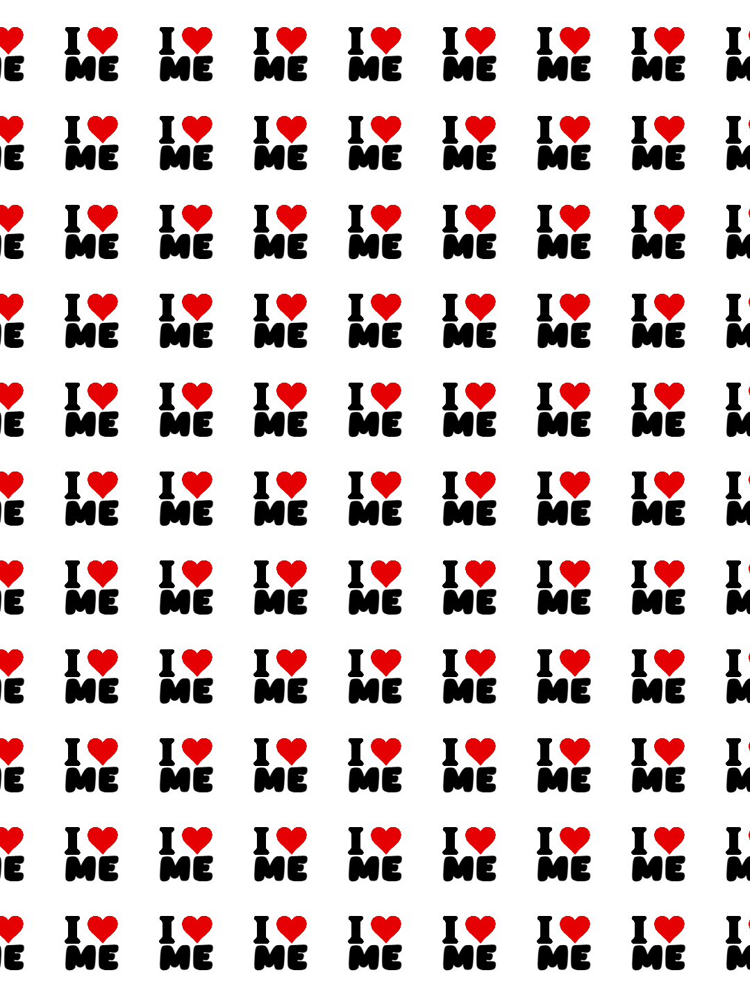
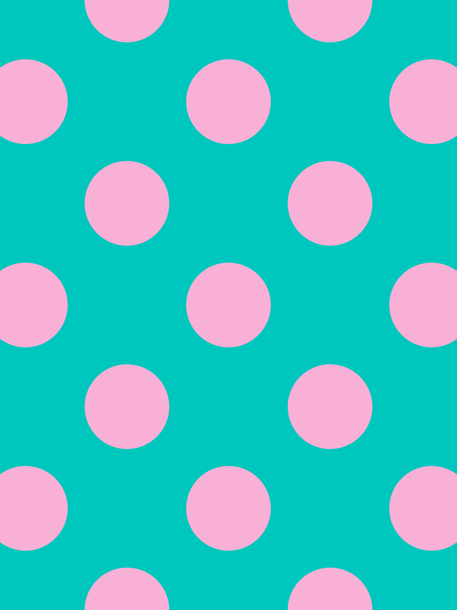
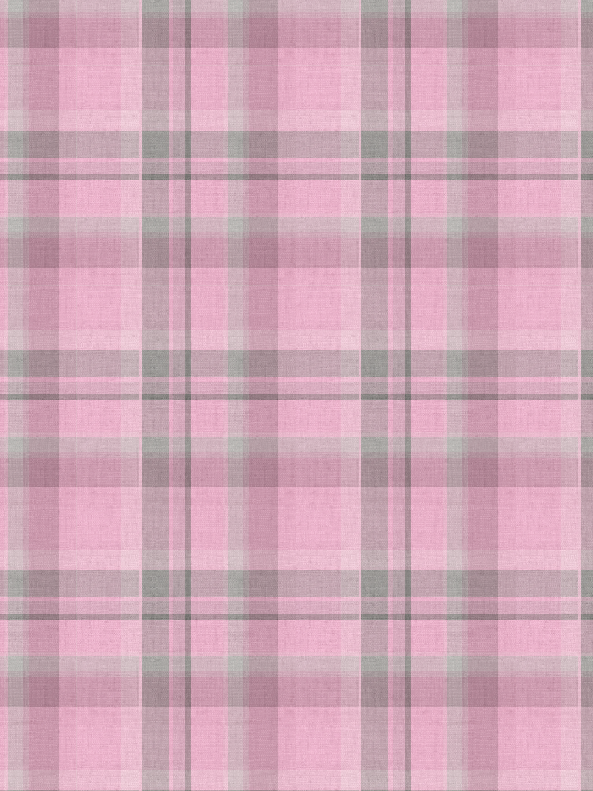
四张照片，多种摆法。
从最经典的 2×2 宫格，到竖排长条、平铺、双条，不同排版适配不同的叙事节奏。
对着屏幕哈一口气，
雾就上来了。
摄像头不只是拍照——它认得你的脸，也接得住你哈出的那口「雾」。
face-api.js 实时追踪 68 个面部关键点，让贴纸与边框稳稳地「长」在脸上。
face-api.js 识别张嘴「哈气」在屏幕上凝成水雾，再用指尖擦出图案——像冬天在窗玻璃上写字。


一张照片，七种滤镜，九种遮罩。
滤镜决定「情绪」，遮罩决定「质感」。点一点，看同一张照片能变出多少种样子。
一张相纸，三种打开方式。
静态、轮播、过程——同一份作品，按你的分享场景各取所需。
小卡超市
为每一张「小卡」，寻一个可信的归处。
聚焦「小卡」的垂类购物小程序 —— 让搜索更清晰，价格更透明，交易更安心。
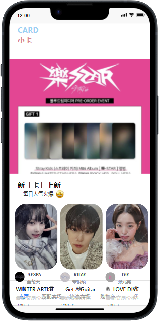
让每一份热爱，
都被认真对待。
当一张掌心大小的卡片，成为千万年轻人的情感载体，混乱的搜索、失真的价格与难辨的真假，却让这份热爱变得沉重。所以我们想做的，是一个专业、透明、规范化的小卡市场。
占用 tag、结果失准，难寻心头好。
同卡异价，难辨真正的最低价。
知假卖假，售后缺位。
产品演示
一段视频，看懂小卡超市如何让每一张卡的流转，都清晰、透明、安心。
— 产品演示视频
搜索分类明确
精确分类每个团体与成员，点击头像即可浏览其全部卡片。
标准化命名，让搜索不再「海底捞月」。
看到喜欢的小卡却不知道名字？点开该明星的分类即可轻松找到。
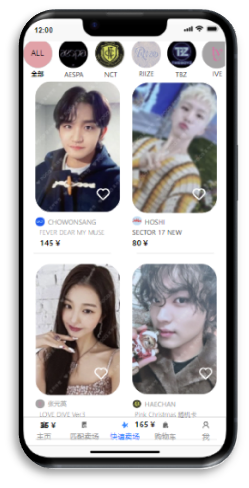

实时价格更新
平台实时撮合买卖双方的期望价格 —— 买家永远拿到全平台最低价，卖家永远等到最高出价。价格不再是黑箱，而是一张透明、可预期的交易之网。


假卡售后保障
「假」是收藏最大的敌人。我们把鉴定前置到售后链路里 —— 全程开箱证据 + 官方鉴定团队，判假即退，卖家承担鉴定费并受平台处罚；判真则买家承担。规则清晰，责任分明。


营销方案
围绕小卡的核心人群，借内容与社区，让每一次曝光都指向同一个可信的归处。


公众号每周推送功能更新与福利活动，微博借明星超话主持人、大吧吧主等 KOL 影响力扩圈，双端合力指向小程序成交。
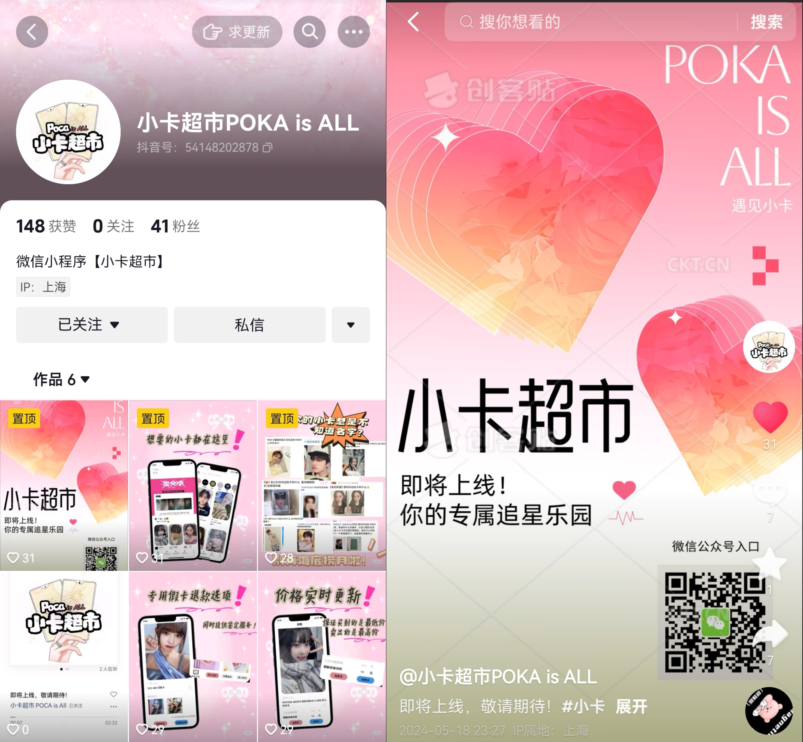
官方抖音号以短视频开箱、鉴卡引流，并与小红书双平台同步宣传，扩大品牌曝光、直导小程序。
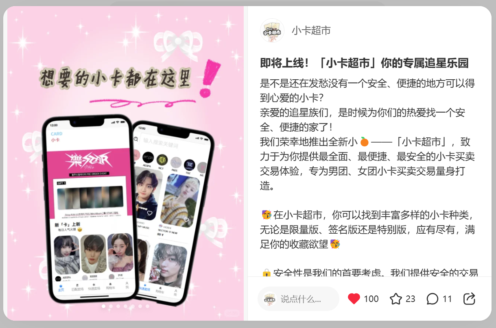
官方号持续发布打包技巧、小卡推荐等笔记，并与垂直达人合作，沉淀「可信、透明」口碑，圈定核心圈层。
穿搭种草账号
以穿搭为语言，为潮流 Gen Z，提炼可被收藏的风格灵感。
从 0 起号、0 成本，专注「穿搭风格推荐」与「服装店铺推荐」的小红书图文账号运营人。
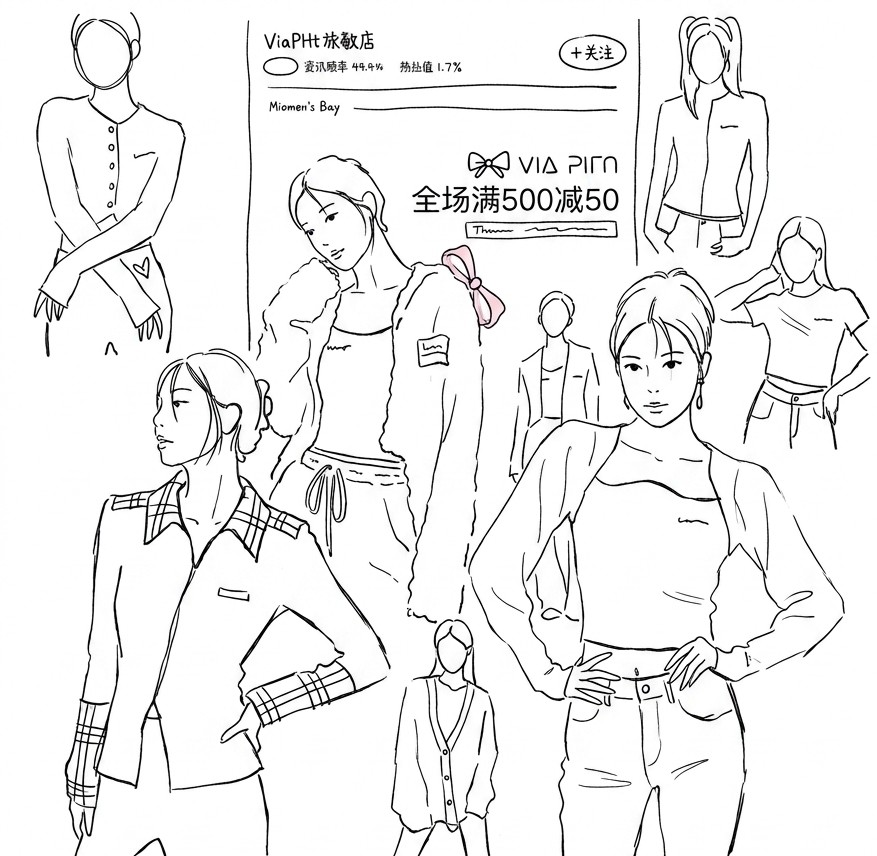
LOOK 01 穿搭春日少女｜奶油系穿搭日记
穿搭风格推荐穿搭与店铺，双线种草。
账号从 0 搭建、运营近一年，围绕「穿搭风格推荐」与「服装店铺推荐」两条内容主线，面向活跃于网络、追随潮流的 Gen Z 人群。用真实、可复制的图文笔记，把每一次风格灵感沉淀为可持续的种草内容。
爆款的本质，是拆解，而非运气。
数字，是最好的作品。
每 3 篇笔记，就有约 1 篇成为爆款。
爆款，是这组数据里最有力的说明。
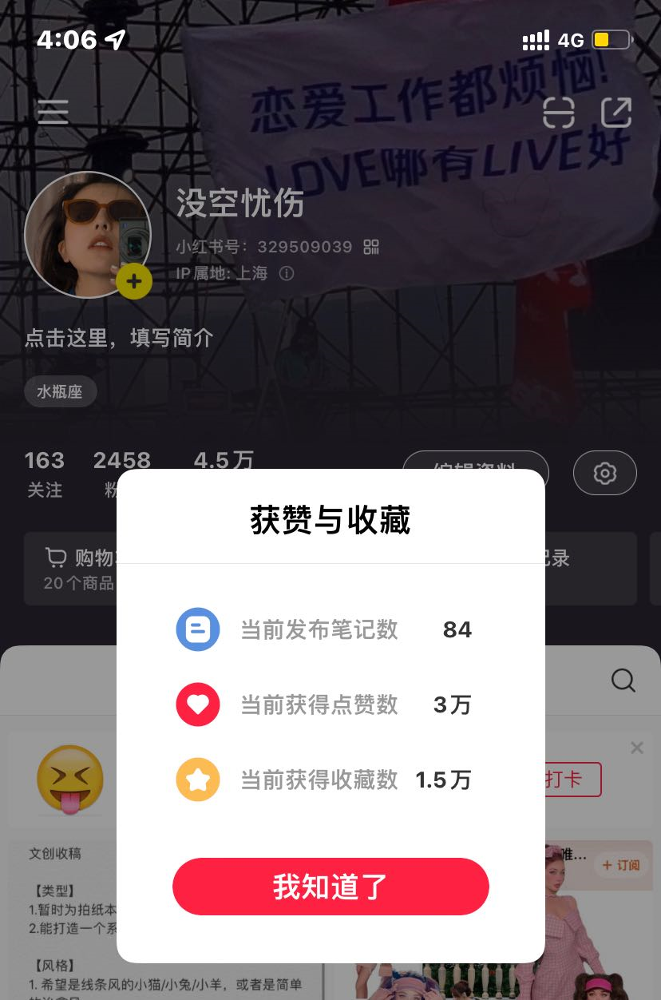
真实账号数据截图精选笔记
从 83 篇笔记中精选的代表内容，直接呈现。